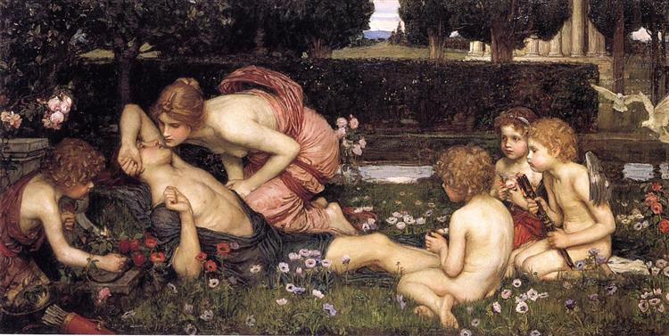
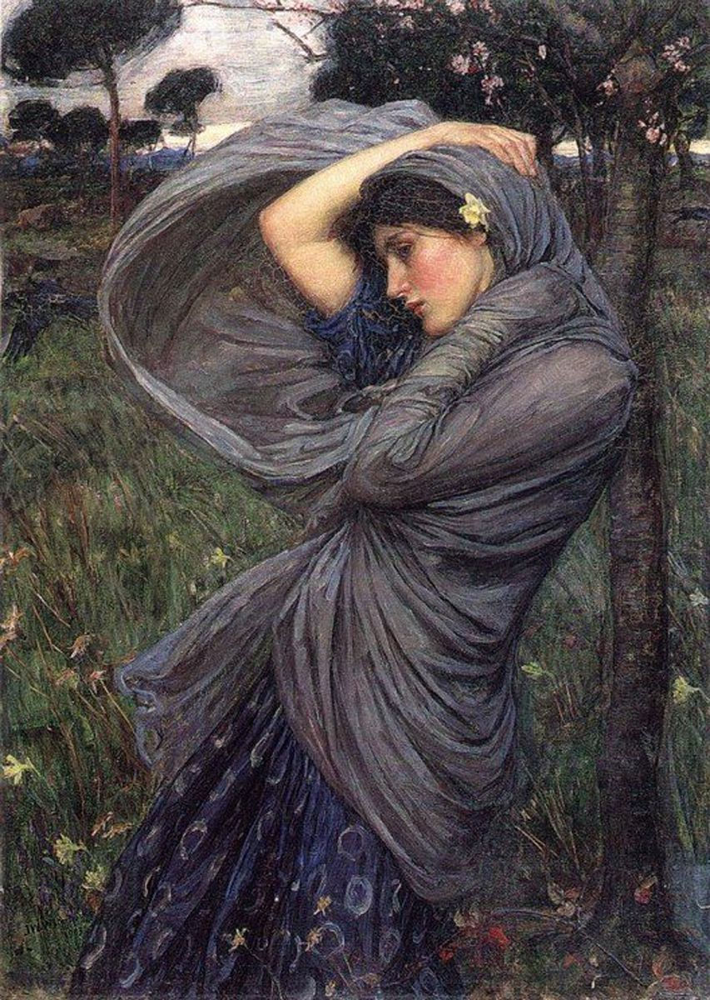
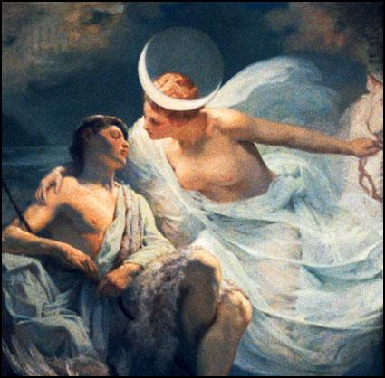
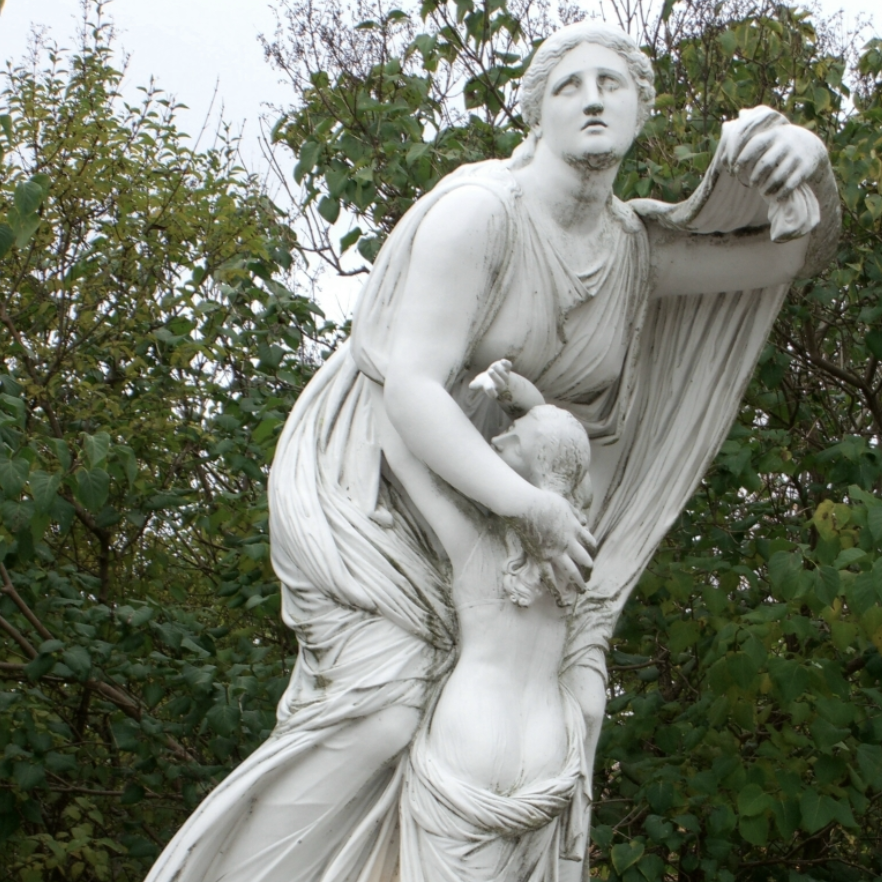
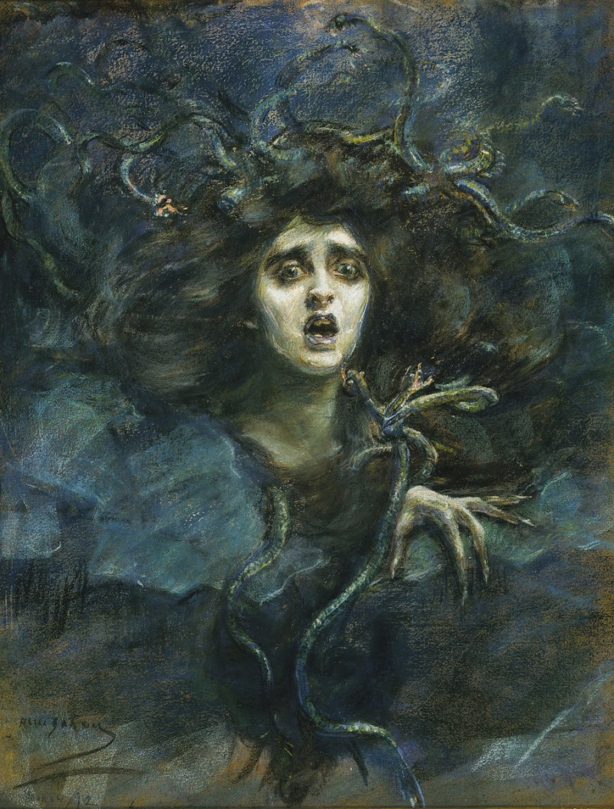
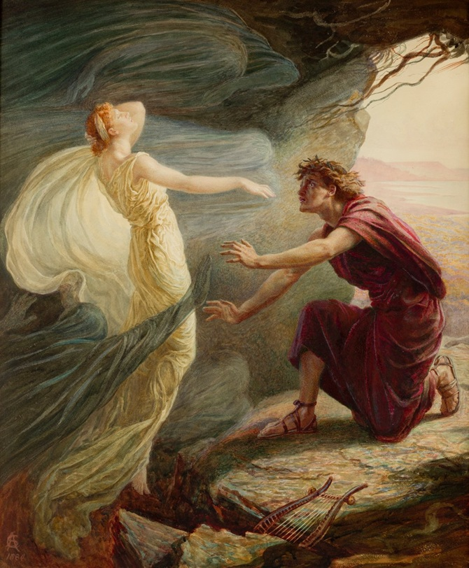
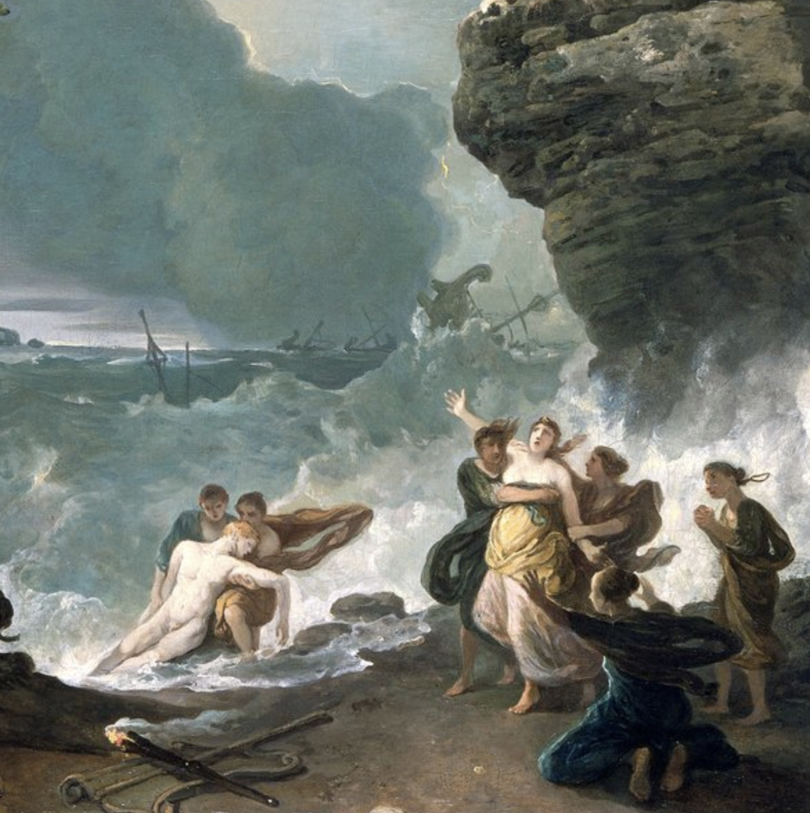

Romantiek
Waterhouse focust in zijn schilderijen op vrouwelijke schoonheid. Dit combineert hij met de romantische themas over vrouwelijkheid, betovering en natuur. Hij beeldt ook vaak water af. Dit was een symbool voor het leven, mysterie en de dood, het versterkt het gevoel rondom de femme fatales en de reflecties van het water helpen met de compositie.
Waterhouse verkende ook het mannelijke verlangen, waarbij hij momenten koos waarop mannelijke hoofdpersonen kijken, verlangen, worstelen met hun gevoelens en zich eraan toegeven.

The Awakening of Adonis, oil painting, John William Waterhouse, 1889.
Heidendom
Het klassieke heidendom staat in veel van Waterhouse zijn werken centraal. Britten uit die tijd hielden hier erg van, omdat ze deze verhalen zagen als een soort ontsnapping aan de groei van de industrie. Heidense verhalen waren voor hen een viering van het leven, vrij van de maatschappelijke beperkingen die bij het Christendom hoorden.

Boreas, oil painting, John William Waterhouse, 1903.
Ideeën Eindproduct
Voor mijn eigen eindproduct ben ik van plan een verhaal te kiezen waar de romantische motieven van Waterhouse in terug komen. Dit zijn de opties van verhalen die ik wil maken in mijn eigen schilderij:
Selene & Endymion
Selene is godin van de maan en wordt verliefd op Endymion die sterfelijk is. Ze vraagt Zeus om hem voor eeuwig te laten slapen, zodat ze hem elke nacht kan bezoeken. (Maanlicht/sfeer, intiem verlangen zonder aanraking, dromerig beeld)
Selena kisses Endymion while he's asleep, Albert Aublet, ~1885.

Niobe
Niobe was een trotse moeder die te veel hoogmoed had tegenover de goden. Als straf doodden Apollo en Artemis al haar kinderen. Door verdriet versteende ze, maar haar tranen zouden eeuwig blijven vloeien. (Tragisch moment, vrouw, natuur en emotie vallen samen)
Niobe with her younger daughter, first half of the 2nd century A.D.

Medusa
Medusa wordt verkracht door Poseidon in Athena’s tempel en wordt door Athena gestraft in plaats van beschermd. Haar schoonheid verandert in een monster die mensen versteent. (Tragische vrouwelijkheid, onrecht, stille woede, schoonheid samen met dreiging)
Medusa (Laura Dreyfus Barney), pastel on canvas, Alice Pike Barney, 1892

Orpheus & Eurydice
Euridice sterft en gaat naar de onderwereld. De hopeloze Orpheus daalt de in onderwereld af om haar te vinden. Eurydice volgt Orpheus weer uit de onderwereld vol hoop, zonder dat Orpheus om mag kijken. Net voor het einde draait hij zich toch om uit wanhoop. Eurydice wordt terug de onderwereld in getrokken. (Beslissend moment, hoop, spanning, tragisch einde)
Orpheus en Eurydice, George Frederic Watts, 1869-1870

Alcyone & Ceyx
Ceyx verdrinkt op zee. Alcyone vindt zijn lichaam en springt zelf in het water. Uit medelijden veranderen de goden hen in ijsvogels, zodat ze samen blijven na hun dood. (Afscheid, liefde, natuur)
Ceyx and Alcyone, oil painting, Richard Wilson, 1768.
